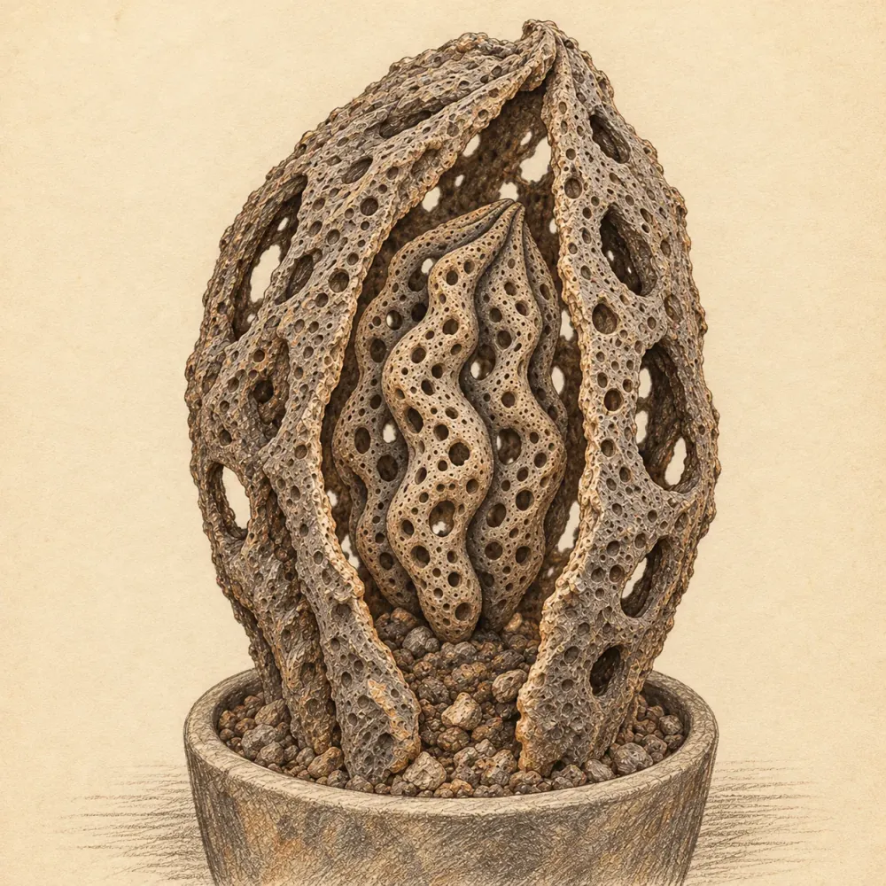
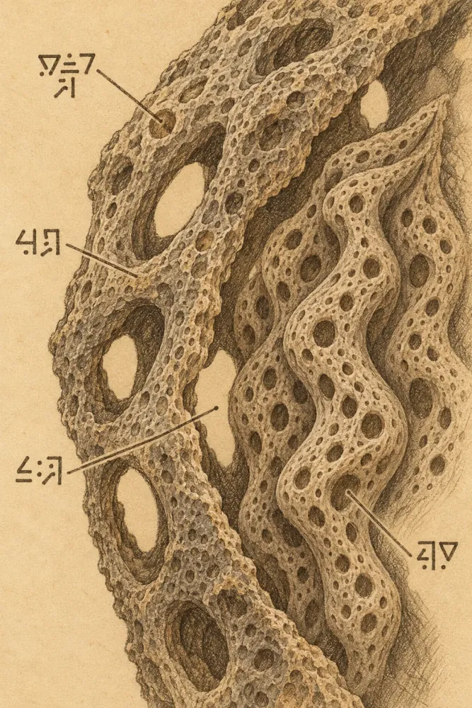
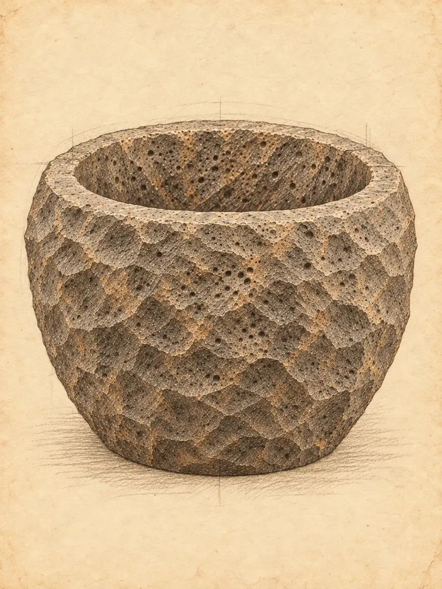
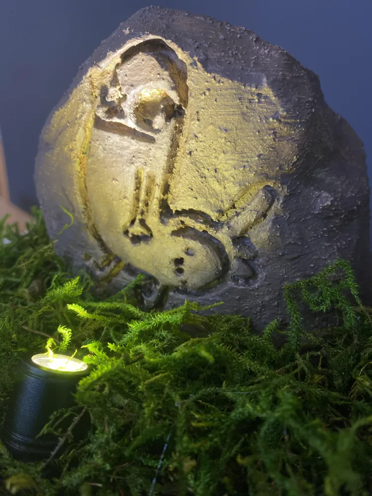
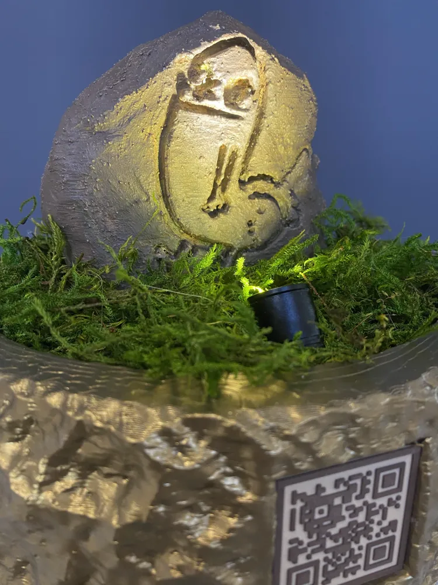
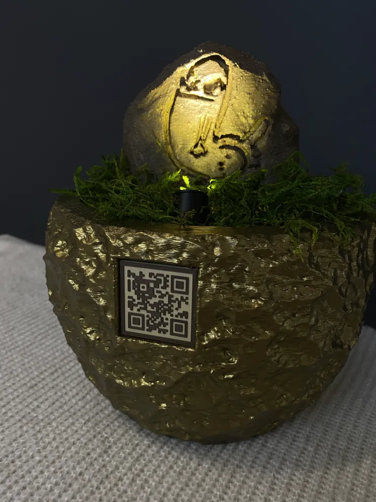
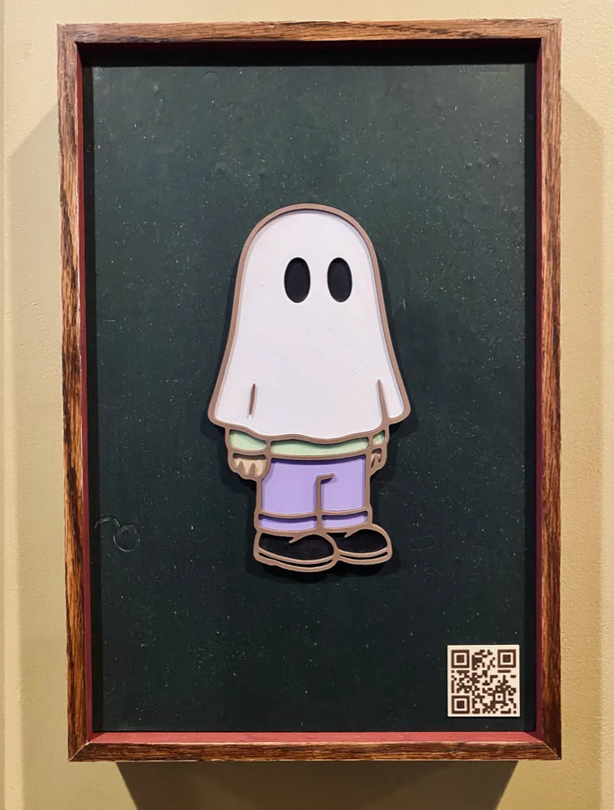
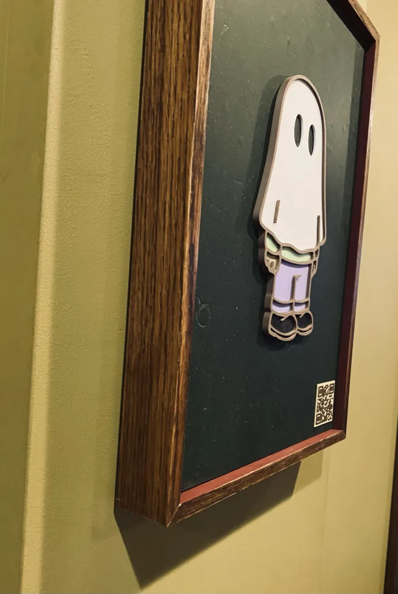
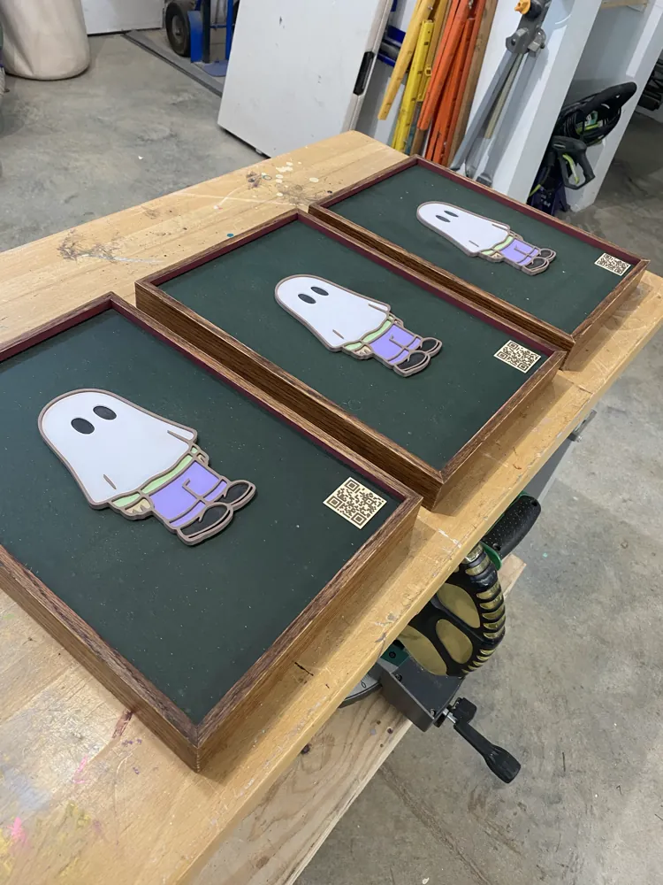

Index of works
Collected Works
Objects, and the records that came with them.
-



Specimen record · Kaelune-7Mentor Cactus
A paired cactus from a distant basalt plain, given as thanks to the people who raise others well.
View record → -



Archival record · EarthFossilized Relief
A relic of Earth's Late Digital Period, studied by archivists who never quite worked out why it mattered.
View record → -



Family recordE.O.J.
An imaginary friend, a drawing that fixed a heart, and a frame made from my dad's old desk.
Read the story →